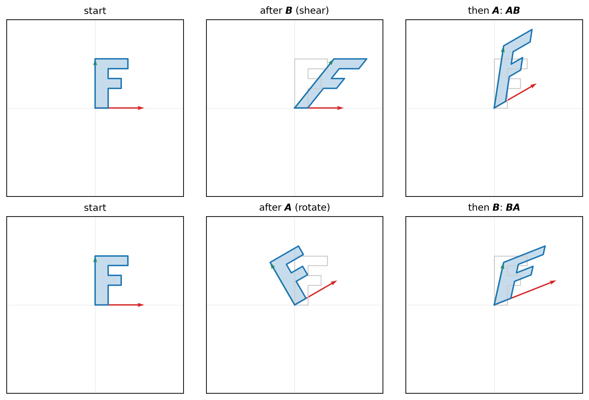
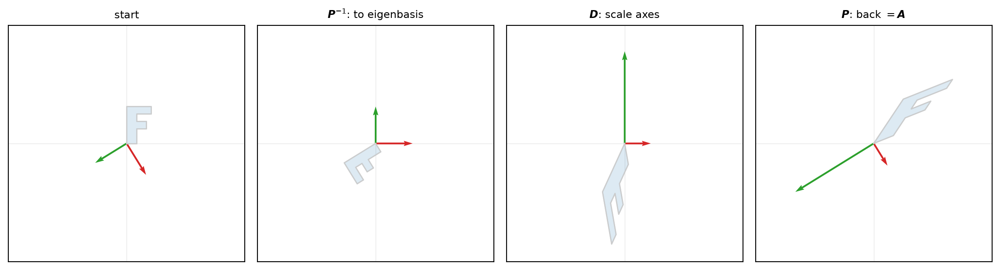

Chapter 2 built the spaces; this chapter studies the maps between them. The only maps worth studying in linear algebra are those that respect the two operations a vector space is built on — addition and scaling. A linear map is a function \(T : \mathbb{R}^n \to \mathbb{R}^m\) that preserves linear combinations: \[
T(\alpha \boldsymbol{u} + \beta \boldsymbol{v}) = \alpha\, T(\boldsymbol{u}) + \beta\, T(\boldsymbol{v})
\qquad \text{for all } \boldsymbol{u}, \boldsymbol{v} \in \mathbb{R}^n,\ \alpha, \beta \in \mathbb{R}.
\tag{3.1}\] Equivalently, whatever linear combination you build in the source space, \(T\) builds the same combination of the images in the target space.
3.1 Linear maps and their matrices
Equation 3.1 has a powerful consequence: a linear map is completely determined by what it does to a basis. Write any \(\boldsymbol{x} \in \mathbb{R}^n\) in the standard basis as \(\boldsymbol{x} = x_1 \boldsymbol{e}_1 + \cdots + x_n \boldsymbol{e}_n\). Applying \(T\) and using Equation 3.1 repeatedly, \[
T(\boldsymbol{x}) = x_1\, T(\boldsymbol{e}_1) + x_2\, T(\boldsymbol{e}_2) + \cdots + x_n\, T(\boldsymbol{e}_n).
\tag{3.2}\] Once we know the \(n\) image vectors \(T(\boldsymbol{e}_1), \dots, T(\boldsymbol{e}_n)\), we know \(T\) on every input. So recording those images is recording the map. Stacking them as the columns of an array gives a matrix.
Definition 3.1 The matrix of a linear map \(T : \mathbb{R}^n \to \mathbb{R}^m\) is the \(m \times n\) array whose \(j\)-th column is the image of the \(j\)-th standard basis vector, \[
\boldsymbol{A} = \begin{bmatrix} \big| & & \big| \\ \boldsymbol{a}_1 & \cdots & \boldsymbol{a}_n \\ \big| & & \big| \end{bmatrix} = \begin{bmatrix} \big| & & \big| \\ T(\boldsymbol{e}_1) & \cdots & T(\boldsymbol{e}_n) \\ \big| & & \big| \end{bmatrix}.
\]
Using the notation, Equation 3.2 becomes the definition of the matrix–vector product: \(T(\boldsymbol{x}) = \boldsymbol{A}\boldsymbol{x}\) is the linear combination of the columns of \(\boldsymbol{A}\) weighted by the components of \(\boldsymbol{x}\), \[
\boldsymbol{A}\boldsymbol{x} = x_1 \boldsymbol{a}_1 + x_2 \boldsymbol{a}_2 + \cdots + x_n \boldsymbol{a}_n, \quad \boldsymbol{a}_j = \boldsymbol{A}\boldsymbol{e}_j.
\tag{3.3}\] The figure below shows the two columns of a \(2\times 2\) matrix as the landing spots of \(\boldsymbol{e}_1\) and \(\boldsymbol{e}_2\), with the unit square carried along.
Two subsets attached to any linear map describe its reach and its collapse. The image of \(T\) is the set of outputs it can produce, \(\{\boldsymbol{A}\boldsymbol{x} : \boldsymbol{x} \in \mathbb{R}^n\}\); this is exactly the span (Definition 2.4) of the columns of \(\boldsymbol{A}\). The kernel is the set of inputs sent to zero, \(\{\boldsymbol{x} : \boldsymbol{A}\boldsymbol{x} = \boldsymbol{0}\}\).
Definition 3.2 The transpose of a matrix \(\boldsymbol{A}\) is the matrix \(\boldsymbol{A}^{\top}\) whose rows are the columns of \(\boldsymbol{A}\). \[
\boldsymbol{A}^{\top} =
\begin{bmatrix}
-- & \boldsymbol{a}_1^{\top} & -- \\
& \vdots & \\
-- & \boldsymbol{a}_n^{\top} & --
\end{bmatrix}
\]
Example 3.1 In finance, a factor model writes each asset’s return as a linear response to \(k\) common factors \(\boldsymbol{f}_t\). With \(n\) assets and \(k\) factors, \[
\boldsymbol{r}_t = \boldsymbol{\alpha} + \boldsymbol{B}\boldsymbol{f}_t + \boldsymbol{\varepsilon}_t,
\] where \(\boldsymbol{f}_t \in \mathbb{R}^k\) collects the factor realizations, \(\boldsymbol{\varepsilon}_t\) is idiosyncratic noise, the \(n \times k\) matrix \(\boldsymbol{B}\) of factor loadings is the linear map from factor space to asset returns, \(\boldsymbol{\alpha}\) is abnormal returns. In the CAPM there is a single factor (\(k = 1\)) and \(\boldsymbol{B}\) is the column of market betas.
To see a linear map, watch what it does to a shape. We use an asymmetric letter “F” — asymmetric so that a rotation looks different from a reflection — and overlay the reference copy (grey) on the transformed copy (blue). The red and green arrows are the columns of the matrix, i.e. the images \(\boldsymbol{A}\boldsymbol{e}_1\) and \(\boldsymbol{A}\boldsymbol{e}_2\); by Equation 3.3 they alone determine where every other point goes.
Scaling: stretches along \(\boldsymbol{e}_1\) and compresses along \(\boldsymbol{e}_2\). \[
\begin{bmatrix} 1.6 & 0 \\ 0 & 0.6 \end{bmatrix}
\]
Rotation: turns the plane by \(\theta\); its columns are the rotated basis vectors and stay perpendicular and unit-length. \[
\begin{bmatrix} \cos\theta & -\sin\theta \\ \sin\theta & \cos\theta \end{bmatrix}
\]
Projection: flattens the whole plane onto the horizontal axis. Its second column is \(\boldsymbol{0}\): the map sends \(\boldsymbol{e}_2\) to the origin, so the vertical direction is exactly the kernel. The image is one-dimensional — a line — and the “F” loses a dimension. \[
\begin{bmatrix} 1 & 0 \\ 0 & 0 \end{bmatrix}
\]
Two observations carry forward. First, the columns are the entire content of the map: read them off and you can reconstruct every panel. Second, the transformation rescales area. The unit square of area \(1\) becomes a parallelogram whose area is the determinant of the matrix — \(0.96\) for the scaling, \(1\) for the rotation and shear (they preserve area), and \(0\) for the projection, which has collapsed area to nothing. The reflection has signed area \(-1\): the minus sign records the flip in orientation. We develop the determinant properly in Section 3.6; for now it is enough to see it as the area-scaling factor built into the picture.
3.2 Matrix multiplication
What happens if we apply one linear map and then another? Suppose \(\boldsymbol{B}\) is the matrix of a map \(\mathbb{R}^n \to \mathbb{R}^p\) and \(\boldsymbol{A}\) the matrix of a map \(\mathbb{R}^p \to \mathbb{R}^m\). Feeding \(\boldsymbol{x}\) through \(\boldsymbol{B}\) first and then \(\boldsymbol{A}\) produces \(\boldsymbol{A}(\boldsymbol{B}\boldsymbol{x})\). However, can we composite the two maps into a single matrix that does both in one step? The answer is yes, and that is where matrix multiplication comes from.
We want a composite map \(\mathbb{R}^n \to \mathbb{R}^m\) that does both in one step. Therefore, the definition of matrix multiplication \(\boldsymbol{A}\boldsymbol{B}\) should satisfy: \[
(\boldsymbol{A}\boldsymbol{B})\,\boldsymbol{x} = \boldsymbol{A}(\boldsymbol{B}\boldsymbol{x})
\qquad \text{for all } \boldsymbol{x}.
\tag{3.4}\] Consider the following two 2D matrices: \[
\boldsymbol{A} = \begin{bmatrix} a_{11} & a_{12} \\ a_{21} & a_{22} \end{bmatrix}, \qquad
\boldsymbol{B} = \begin{bmatrix} b_{11} & b_{12} \\ b_{21} & b_{22} \end{bmatrix}
\] If we transform a vector \(\boldsymbol{x} = [x_1, x_2]^\top\) first by \(\boldsymbol{B}\) and then by \(\boldsymbol{A}\) using matrix-vector multiplication, the result is \[
\begin{align*}
\boldsymbol{A}(\boldsymbol{B}\boldsymbol{x})
&= \begin{bmatrix} a_{11} & a_{12} \\ a_{21} & a_{22} \end{bmatrix} \begin{bmatrix} b_{11} & b_{12} \\ b_{21} & b_{22} \end{bmatrix} \begin{bmatrix} x_1 \\ x_2 \end{bmatrix} \\
&= \begin{bmatrix} a_{11} & a_{12} \\ a_{21} & a_{22} \end{bmatrix} \begin{bmatrix} b_{11} x_1 + b_{12} x_2 \\ b_{21} x_1 + b_{22} x_2 \end{bmatrix} \\
&= \begin{bmatrix} a_{11}(b_{11} x_1 + b_{12} x_2) + a_{12}(b_{21} x_1 + b_{22} x_2) \\ a_{21}(b_{11} x_1 + b_{12} x_2) + a_{22}(b_{21} x_1 + b_{22} x_2) \end{bmatrix} \\
&= \underbrace{\begin{bmatrix} (a_{11} b_{11} + a_{12} b_{21}) & (a_{11} b_{12} + a_{12} b_{22}) \\ (a_{21} b_{11} + a_{22} b_{21}) & (a_{21} b_{12} + a_{22} b_{22}) \end{bmatrix}}_{\boldsymbol{A}\boldsymbol{B}} \begin{bmatrix} x_1 \\ x_2 \end{bmatrix}
\end{align*}
\] This example shows the intuition of the familiar matrix multiplication rule: \[
(\boldsymbol{A}\boldsymbol{B})_{ij} = \sum_{k=1}^{p} A_{ik} B_{kj}.
\tag{3.5}\]
Definition 3.3 For \(\boldsymbol{A}\) of size \(m \times p\) and \(\boldsymbol{B}\) of size \(p \times n\), the product\(\boldsymbol{A}\boldsymbol{B}\) is the \(m \times n\) matrix with entries Equation 3.5. It is defined only when the number of columns of \(\boldsymbol{A}\) equals the number of rows of \(\boldsymbol{B}\) — the target space of \(\boldsymbol{B}\) must be the source space of \(\boldsymbol{A}\) for the composition to make sense.
Because \(\boldsymbol{A}\boldsymbol{B}\) means “\(\boldsymbol{B}\) first, then \(\boldsymbol{A}\),” swapping the order generally changes the result. The picture makes this vivid: shearing and then rotating is not the same as rotating and then shearing.
Code
import numpy as npimport matplotlib.pyplot as plttheta = np.pi /6A = np.array([[np.cos(theta), -np.sin(theta)], # rotation [np.sin(theta), np.cos(theta)]])B = np.array([[1, 0.8], [0, 1]]) # shearI = np.eye(2)fig, axes = plt.subplots(2, 3, figsize=(9, 6))show(axes[0, 0], I, "start")show(axes[0, 1], B, r"after $\boldsymbol{B}$(shear)")show(axes[0, 2], A @ B, r"then $\boldsymbol{A}$: $\boldsymbol{A}\boldsymbol{B}$")show(axes[1, 0], I, "start")show(axes[1, 1], A, r"after $\boldsymbol{A}$(rotate)")show(axes[1, 2], B @ A, r"then $\boldsymbol{B}$: $\boldsymbol{B}\boldsymbol{A}$")fig.tight_layout()plt.show()

The two bottom-right frames are genuinely different shapes, so \(\boldsymbol{A}\boldsymbol{B} \neq \boldsymbol{B}\boldsymbol{A}\). Matrix multiplication is not commutative — a fact that is mysterious as a rule about number arrays but obvious as a statement about composing motions. A handful of other properties, by contrast, do hold, and each is transparent from Equation 3.4:
Linear regression models an outcome as a linear function of some predictors plus an error. For a single observation \(i\), with \(p\) predictors \(x_{i1}, \dots, x_{ip}\), \[
y_i = \beta_1 x_{i1} + \beta_2 x_{i2} + \cdots + \beta_p x_{ip} + \varepsilon_i .
\] Usually the first predictor is held fixed at \(x_{i1} = 1\), so that \(\beta_1\) is the intercept. The right-hand side is a linear combination of the coefficients \(\beta_1, \dots, \beta_p\) — exactly the object matrices were built to express. Writing the predictors as a row and the coefficients as a column, the systematic part is an inner product, \[
\beta_1 x_{i1} + \cdots + \beta_p x_{ip}
= \begin{bmatrix} x_{i1} & \cdots & x_{ip} \end{bmatrix}
\begin{bmatrix} \beta_1 \\ \vdots \\ \beta_p \end{bmatrix} .
\]
Now stack all \(n\) observations. Collect the outcomes into a vector \(\boldsymbol{y} \in \mathbb{R}^n\), the coefficients into \(\boldsymbol{\beta} \in \mathbb{R}^p\), the errors into \(\boldsymbol{\varepsilon} \in \mathbb{R}^n\), and the predictors into the \(n \times p\)design matrix\(\boldsymbol{X}\), whose \(i\)-th row is observation \(i\) and whose \(j\)-th column is predictor \(j\) across all observations: \[
\underbrace{\begin{bmatrix} y_1 \\ y_2 \\ \vdots \\ y_n \end{bmatrix}}_{\boldsymbol{y}}
=
\underbrace{\begin{bmatrix}
x_{11} & x_{12} & \cdots & x_{1p} \\
x_{21} & x_{22} & \cdots & x_{2p} \\
\vdots & \vdots & & \vdots \\
x_{n1} & x_{n2} & \cdots & x_{np}
\end{bmatrix}}_{\boldsymbol{X}}
\underbrace{\begin{bmatrix} \beta_1 \\ \beta_2 \\ \vdots \\ \beta_p \end{bmatrix}}_{\boldsymbol{\beta}}
+
\underbrace{\begin{bmatrix} \varepsilon_1 \\ \varepsilon_2 \\ \vdots \\ \varepsilon_n \end{bmatrix}}_{\boldsymbol{\varepsilon}} .
\] The \(n\) scalar equations collapse into a single matrix equation, \[
\boldsymbol{y} = \boldsymbol{X}\boldsymbol{\beta} + \boldsymbol{\varepsilon} .
\tag{3.6}\] Read through the column picture of Equation 3.3, the fitted part \(\boldsymbol{X}\boldsymbol{\beta}\) is a linear combination of the columns of \(\boldsymbol{X}\) — the predictors — weighted by the coefficients \(\boldsymbol{\beta}\). Regression asks for the \(\boldsymbol{\beta}\) that makes this combination reproduce \(\boldsymbol{y}\) as closely as possible. Because there are typically far more observations than predictors (\(n \gg p\)), no \(\boldsymbol{\beta}\) hits \(\boldsymbol{y}\) exactly, and the error \(\boldsymbol{\varepsilon}\) is what is left over. How to choose the best \(\boldsymbol{\beta}\) — the method of least squares — waits until we have the tools of Section 4.3; for now the point is only that the whole dataset lives in the compact form Equation 3.6.
3.4 Inverting a map
Matrix-vector multiplication asks the question: given an input \(\boldsymbol{x} \in \mathbb{R}^n\) and a map \(\boldsymbol{A} \in \mathbb{R}^{n\times n}\), what is the output \(\boldsymbol{A}\boldsymbol{x}\)? The opposite question is just as natural: given an output \(\boldsymbol{y} \in \mathbb{R}^n\) and a map \(\boldsymbol{A} \in \mathbb{R}^{n\times n}\), what input \(\boldsymbol{x} \in \mathbb{R}^n\) produced it? In other words, can we run a map backward, recovering the input from the output? Intuitively, recovering is possible only when the map throws no information away. If two different inputs land on the same output, no rule could send that output back to both. For example, for two vectors \(\boldsymbol{x}_1 = [1, 1]^\top\) and \(\boldsymbol{x}_2 = [1, 2]^\top\), and a projection matrix \[
\boldsymbol{A} = \begin{bmatrix} 1 & 0 \\ 0 & 0 \end{bmatrix}
\]\(\boldsymbol{A}\boldsymbol{x}_1 = \boldsymbol{A}\boldsymbol{x}_2 = [1, 0]^\top\). If we only see the output \([1, 0]^\top\), we cannot tell whether the input was \(\boldsymbol{x}_1\) or \(\boldsymbol{x}_2\). We can see that, the second component of the input does not matter: the map has collapsed the vertical direction to zero, and that information is lost. The map cannot be reversed. Formally, a map that can be recovered is called invertible. To summarize the intuition: a linear map is invertible if and only if it does not lose information.
Definition 3.4 A square matrix \(\boldsymbol{A}\) of size \(n \times n\) is invertible (or nonsingular) if there is a matrix \(\boldsymbol{A}^{-1}\), its inverse, with \[
\boldsymbol{A}^{-1}\boldsymbol{A} = \boldsymbol{A}\boldsymbol{A}^{-1} = \boldsymbol{I}.
\] A square matrix with no inverse is called singular.
Example 3.2 Proof: If the square matrix \(\boldsymbol{A}\) is invertible, and \(\boldsymbol{A}\boldsymbol{x}_1 = \boldsymbol{A}\boldsymbol{x}_2\), then \(\boldsymbol{x}_1 = \boldsymbol{x}_2\).
Since \(\boldsymbol{A}\) is invertible, multiply both sides on the left by \(\boldsymbol{A}^{-1}\): \[
\boldsymbol{A}^{-1}\boldsymbol{A}\boldsymbol{x}_1 =\boldsymbol{A}^{-1}\boldsymbol{A}\boldsymbol{x}_2.
\] Using \(\boldsymbol{A}^{-1}\boldsymbol{A}=\boldsymbol{I}\), we get \[
\boldsymbol{I}\boldsymbol{x}_1 =\boldsymbol{I}\boldsymbol{x}_2 \Rightarrow \boldsymbol{x}_1=\boldsymbol{x}_2.
\]
One might ask why we restrict the definition of invertibility to square matrices. This question goes back to the geometric intuition of a linear map: we want the map to be a bijection between the input and output spaces, meaning it must be both one-to-one and onto:
one-to-one: different inputs give different outputs;
onto: every possible output is reachable.
Let’s look at the following two examples of non-square matrices to see why non-square matrices cannot have both properties at once.
Example 3.3 Tall matrix: one-to-one but not onto
Take the \(3\times 2\) matrix \[
\boldsymbol{A}=
\begin{bmatrix}
1 & 0\\
0 & 1\\
0 & 0
\end{bmatrix}.
\] For an input \[
\boldsymbol{x}=
\begin{bmatrix}
a\\
b
\end{bmatrix},
\] we get \[
\boldsymbol{A}\boldsymbol{x}=
\begin{bmatrix}
a\\
b\\
0
\end{bmatrix}.
\] It is one-to-one because if \(\boldsymbol{A}\boldsymbol{x}_1=\boldsymbol{A}\boldsymbol{x}_2\), then the first two coordinates must match, so \(\boldsymbol{x}_1=\boldsymbol{x}_2\).
But it is not onto because not every vector in \(\mathbb{R}^3\) can be reached. For example, \[
\begin{bmatrix}
0\\
0\\
1
\end{bmatrix}
\] is impossible to produce, because every output of \(\boldsymbol{A}\) has third coordinate equal to \(0\). So this tall matrix preserves the input information, but its outputs only fill a plane in \(\mathbb{R}^3\), not all of \(\mathbb{R}^3\).
Example 3.4 Wide matrix: onto but not one-to-one
Take the \(2\times 3\) matrix \[
\boldsymbol{B}=
\begin{bmatrix}
1 & 0 & 0\\
0 & 1 & 0
\end{bmatrix}.
\] For an input \[
\boldsymbol{x}=
\begin{bmatrix}
a\\
b\\
c
\end{bmatrix},
\] we get \[
\boldsymbol{B}\boldsymbol{x}=
\begin{bmatrix}
a\\
b
\end{bmatrix}.
\] So \(\boldsymbol{B}\) simply drops the third coordinate. It is onto because every vector in \(\mathbb{R}^2\) can be reached. For example, if we want \[
\begin{bmatrix}
u\\
v
\end{bmatrix},
\] we can choose \[
\boldsymbol{x}=
\begin{bmatrix}
u\\
v\\
0
\end{bmatrix},
\Rightarrow
\boldsymbol{B}\boldsymbol{x}=
\begin{bmatrix}
u\\
v
\end{bmatrix}.
\] But it is not one-to-one because different inputs can give the same output. For example, \[
\boldsymbol{x}_1=
\begin{bmatrix}
1\\
2\\
0
\end{bmatrix},
\qquad
\boldsymbol{x}_2=
\begin{bmatrix}
1\\
2\\
5
\end{bmatrix}.
\] Then \[
\boldsymbol{B}\boldsymbol{x}_1=
\begin{bmatrix}
1\\
2
\end{bmatrix}
\quad \text{and} \quad
\boldsymbol{B}\boldsymbol{x}_2=
\begin{bmatrix}
1\\
2
\end{bmatrix}.
\] So \(\boldsymbol{B}\boldsymbol{x}_1=\boldsymbol{B}\boldsymbol{x}_2\) even though \(\boldsymbol{x}_1\neq \boldsymbol{x}_2\). The wide matrix loses information because it forgets the third coordinate.
Another way to think about invertibility is the kernel. Intuitively, the kernel tells you whether the linear map loses information. Recall, for a linear map \(\boldsymbol{A}\), the kernel is \[
\ker \boldsymbol{A} = \{\boldsymbol{x}: \boldsymbol{A}\boldsymbol{x}=\boldsymbol{0}\}.
\] So if \[
\ker \boldsymbol{A}={\boldsymbol{0}},
\] that means the only vector that gets crushed to zero is the zero vector itself. Mathematically, \(\boldsymbol{A}\boldsymbol{x}_1=\boldsymbol{A}\boldsymbol{x}_2\) if and only if \(\boldsymbol{A}\boldsymbol{x}_1-\boldsymbol{A}\boldsymbol{x}_2=\boldsymbol{0}\), i.e., \[
\boldsymbol{A}(\boldsymbol{x}_1-\boldsymbol{x}_2)=\boldsymbol{0}.
\] So the difference \(\boldsymbol{x}_1-\boldsymbol{x}_2\) is in the kernel. A good geometric intuition is: If \(\ker \boldsymbol{A}\) contains a nonzero vector, then \(\boldsymbol{A}\) flattens some direction to zero. Information is lost, so you cannot reverse it. If \(\ker \boldsymbol{A}={\boldsymbol{0}}\), no direction is flattened. The transformation may rotate, stretch, shear, or reflect space, but it does not collapse it. Therefore it can be reversed.
The projection panel from the gallery is the cautionary picture: it flattened the plane onto a line, sending the entire vertical direction to \(\boldsymbol{0}\). Once the height is gone, nothing can restore it; the projection is singular. Collapsing a dimension and losing invertibility are the same event. For a square map the converse holds too — a trivial kernel is enough to guarantee an inverse — so \[
\boldsymbol{A} \text{ invertible} \quad\iff\quad \ker\boldsymbol{A} = \{\boldsymbol{0}\},
\] invertible exactly when the map collapses nothing.
Two properties are worth recording, both transparent from the “reverse” reading:
Reverse order: \((\boldsymbol{A}\boldsymbol{B})^{-1} = \boldsymbol{B}^{-1}\boldsymbol{A}^{-1}\). To reverse “\(\boldsymbol{B}\) then \(\boldsymbol{A}\)”, we need to undo \(\boldsymbol{A}\) first, then \(\boldsymbol{B}\) — the reverse order, like taking off a coat before the shirt you put on first.
Invertibility is all-or-nothing: a map either loses information or it does not. Rank measures how much information survives.
Definition 3.5 The rank of \(\boldsymbol{A}\) is the number of linearly independent columns of \(\boldsymbol{A}\).
Recall from Section 3.1 that the image of \(\boldsymbol{A}\) is the span of its columns. The rank counts how many of those columns are genuinely independent — how many independent directions the outputs actually fill. A redundant column, being a linear combination of the others (Definition 2.5), adds nothing new to the image and does not raise the rank.
A matrix with \(n\) columns has rank at most \(n\) (and at most its number of rows). When the rank reaches this ceiling — every column linearly independent — the matrix has full rank; otherwise it is rank-deficient, and the map has squashed some directions together. The projection panel has rank \(1\): its second column is the zero vector, so only one independent direction — the first column — survives.
Rank and kernel count the same collapse from opposite sides. Each input direction the map does not flatten becomes an independent direction of the image; each direction it flattens lands in the kernel. So for a matrix with \(n\) columns, the independent directions it flattens and its rank always add up to \(n\). For a square \(n \times n\) matrix, every column is independent (full rank) exactly when nothing is flattened (trivial kernel), extending the earlier equivalence to \[
\boldsymbol{A} \text{ invertible} \quad\iff\quad \ker\boldsymbol{A} = \{\boldsymbol{0}\} \quad\iff\quad \operatorname{rank}\boldsymbol{A} = n.
\]
Example 3.5 Perfect multicollinearity (Example 2.1) is exactly rank deficiency. With \(\boldsymbol{X}\) an \(N \times k\) matrix of \(k\) exogeous variables, the OLS estimator needs \(\boldsymbol{X}^\top\boldsymbol{X}\) to be invertible, which holds iff \(\operatorname{rank}\boldsymbol{X} = k\) — the exogeous variables are linearly independent. If one exogeous variable is a linear combination of the others (e.g. a redundant dummy), then \(\operatorname{rank}\boldsymbol{X} < k\), \(\boldsymbol{X}^\top\boldsymbol{X}\) is singular, and the coefficients are not identified: infinitely many \(\hat{\boldsymbol{\beta}}\) produce an identical fit, differing by a vector in the kernel. Rank is the precise measure of how many genuinely independent exogeous variables the data carry.
Example 3.6 Proof: If \(\boldsymbol{X}\in \mathbb{R}^{N \times k}\) has rank smaller than \(k\), then \(\boldsymbol{X}^\top\boldsymbol{X}\) is singular.
Because \(\boldsymbol{X}\in \mathbb{R}^{N\times k}\) has rank smaller than \(k\), its columns are linearly dependent.Therefore, there exists a nonzero vector \(\boldsymbol{v}\in \mathbb{R}^k\) with \(\boldsymbol{v}\neq \boldsymbol{0}\), such that \[
\boldsymbol{X}\boldsymbol{v}=\boldsymbol{0}.
\] Now multiply both sides by \(\boldsymbol{X}^\top\): \[
\boldsymbol{X}^\top\boldsymbol{X}\boldsymbol{v}=\boldsymbol{0}.
\] Therefore, \(\ker(\boldsymbol{X}^\top\boldsymbol{X})\neq {\boldsymbol{0}}\). \(\boldsymbol{X}^\top\boldsymbol{X}\) is singular.
3.6 Determinant
Look back at the gallery of linear maps. The scaling panel stretched the plane, the rotation and shear panels preserved area, the reflection flipped orientation, and the projection crushed area to zero. Each map has a single number that summarizes its effect on area: the determinant.
Here, we skip the complicated definition of the determinant and instead give a geometric reading. The determinant is the signed factor by which a linear map scales volume. In two dimensions, “volume” is area; in three dimensions, it is volume; in higher dimensions, it is hypervolume. The determinant is positive if the map preserves orientation and negative if it flips orientation.
In two dimensions “volume” is area, and for a \(2 \times 2\) matrix the determinant has the closed form \[
\det\begin{bmatrix} a & b \\ c & d \end{bmatrix} = ad - bc,
\] the signed area of the parallelogram spanned by the two columns.
Let’s check the formula. Denote the red vector by \(\boldsymbol{v}_1 = [2, 0.5]^\top\) and the green vector by \(\boldsymbol{v}_2 = [1, 1.5]^\top\). The area of the parallelogram is the base times the height. The base is the length of \(\boldsymbol{v}_1\), and the height is the length of the component of \(\boldsymbol{v}_2\) perpendicular to \(\boldsymbol{v}_1\). The determinant formula gives \[
\boldsymbol{A} = \begin{bmatrix} 2 & 1 \\ 0.5 & 1.5 \end{bmatrix} \implies \det\boldsymbol{A} = 2\times 1.5 - 1\times 0.5 = 2.5.
\] Let’s compute the area geometrically. The length of the red line is \(\sqrt{2^2 + 0.5^2} = \sqrt{4 + 0.25} = \sqrt{4.25}\). Using the projection theorem, the height vector of the parallelogram is \[
\boldsymbol{v}_2 - \frac{\langle\boldsymbol{v}_1, \boldsymbol{v}_2\rangle}{\langle\boldsymbol{v}_1, \boldsymbol{v}_1\rangle} \boldsymbol{v}_1 =
\begin{bmatrix}
1 \\ 1.5
\end{bmatrix}
-
\frac{1\times 2 + 1.5\times 0.5}{2^2 + 0.5^2} \begin{bmatrix}
2 \\ 0.5
\end{bmatrix} =
\begin{bmatrix}
-\frac{5}{17} \\ \frac{20}{17}
\end{bmatrix}.
\] The length of this vector is \(\sqrt{(-5/17)^2 + (20/17)^2} = \frac{5}{\sqrt{17}}\). Therefore the area of the parallelogram is \(\sqrt{4.25}\times \frac{5}{\sqrt{17}} = 2.5\), exactly the determinant.
Example 3.8 Let’s check the determinant of a rotation matrix. For a rotation by \(\theta\), \[
\boldsymbol{A} = \begin{bmatrix} \cos\theta & -\sin\theta \\ \sin\theta & \cos\theta \end{bmatrix}
\] As we saw in the gallery, a rotation preserves area, so we expect \(\det\boldsymbol{A} = 1\). Let’s compute: \[
\det\boldsymbol{A} = \cos\theta\cdot\cos\theta - (-\sin\theta)\cdot\sin\theta = \cos^2\theta + \sin^2\theta = 1.
\]
Example 3.9 Let’s check the determinant of a reflection matrix. For a reflection across the horizontal axis, \[
\boldsymbol{A} = \begin{bmatrix} 1 & 0 \\ 0 & -1 \end{bmatrix}
\] As we saw in the gallery, a reflection preserves area but flips orientation, so we expect \(\det\boldsymbol{A} = -1\). Let’s compute: \[
\det\boldsymbol{A} = 1\cdot(-1) - 0\cdot 0 = -1.
\]
The geometric reading makes the key properties self-evident:
\(\det\boldsymbol{I} = 1\) — the identity moves nothing.
\(\det(\boldsymbol{A}\boldsymbol{B}) = \det\boldsymbol{A}\,\det\boldsymbol{B}\) — composed maps multiply their volume factors.
\(\det(\boldsymbol{A}^{-1}) = 1/\det\boldsymbol{A}\) — reverse scales by the reciprocal.
In the projection panel, the matrix \[
\boldsymbol{A} = \begin{bmatrix} 1 & 0 \\ 0 & 0 \end{bmatrix}
\] flattens the plane to a line, i.e., area is crushed to zero. Therefore, the determinant is zero. In general, a square matrix is invertible exactly when its determinant is nonzero. The four equivalent conditions are summarized in the following theorem.
Theorem 3.1 For a square \(n \times n\) matrix \(\boldsymbol{A}\), the following are equivalent:
\(\boldsymbol{A}\) is invertible;
\(\ker\boldsymbol{A} = \{\boldsymbol{0}\}\);
\(\operatorname{rank}\boldsymbol{A} = n\);
\(\det\boldsymbol{A} \neq 0\).
3.7 Eigenvalues and eigenvectors
Most directions are turned by a linear map. A few special directions are only stretched, and those directions are the key to understanding what the map does.
Definition 3.6 A nonzero vector \(\boldsymbol{v}\) is an eigenvector of a square matrix \(\boldsymbol{A}\) if \[
\boldsymbol{A}\boldsymbol{v} = \lambda\boldsymbol{v}
\] for some scalar \(\lambda\), the associated eigenvalue. The map leaves the direction of \(\boldsymbol{v}\) unchanged, merely scaling it by \(\lambda\) (reversing it if \(\lambda < 0\)).
The gallery panels show the idea at a glance. A scaling \(\begin{bmatrix} a & 0 \\ 0 & b \end{bmatrix}\) has the coordinate axes \(\boldsymbol{e}_1, \boldsymbol{e}_2\) as eigenvectors, with eigenvalues \(a, b\): the axes are exactly the directions it does not turn. A shear fixes the horizontal axis (eigenvalue \(1\)) and turns everything else. A rotation turns every direction, so it has no real eigenvectors at all (but complex ones).
To find them, rewrite the defining equation as \((\boldsymbol{A} - \lambda\boldsymbol{I})\boldsymbol{v} = \boldsymbol{0}\). To satisfy this equation, at least one of the following must hold: either \(\boldsymbol{v} = \boldsymbol{0}\), or the matrix \(\boldsymbol{A} - \lambda\boldsymbol{I}\) is singular. Therefore, By Theorem 3.1, for nonzero \(\boldsymbol{v}\) to exist, we must have \[
\det(\boldsymbol{A} - \lambda\boldsymbol{I}) = 0,
\tag{3.7}\] the characteristic equation. Its roots are the eigenvalues.
The figure shows a symmetric matrix acting on the unit circle. A generic vector is rotated toward the long axis, but the two eigenvectors (grey) keep their directions, stretched by their eigenvalues (red); the circle becomes an ellipse whose axes are exactly the eigen-directions.
Example 3.10 Proof: Eigenvectors are linearly independent if the corresponding eigenvalues are distinct.
Suppose \(\boldsymbol{v}_1\) and \(\boldsymbol{v}_2\) are two eigenvectors of \(\boldsymbol{A}\) with distinct eigenvalues \(\lambda_1\) and \(\lambda_2\). Suppose there is a linear combination that sums to zero: \[
\alpha_1 \boldsymbol{v}_1 + \alpha_2 \boldsymbol{v}_2 = \boldsymbol{0}.
\tag{3.8}\] we need to show that \(\alpha_1 = \alpha_2 = 0\) is the only solution.
Multiply \(\boldsymbol{A}\) to both sides of Equation 3.8: \[
\alpha_1 \boldsymbol{A}\boldsymbol{v}_1 + \alpha_2 \boldsymbol{A}\boldsymbol{v}_2 = \alpha_1 \lambda_1 \boldsymbol{v}_1 + \alpha_2 \lambda_2 \boldsymbol{v}_2 = \boldsymbol{0}
\]
Multiply \(\lambda_1\) to both sides of Equation 3.8: \[
\alpha_1 \lambda_1 \boldsymbol{v}_1 + \alpha_2 \lambda_1 \boldsymbol{v}_2 = \boldsymbol{0}.
\]
Subtract the second equation from the first: \[
\alpha_2 (\lambda_2 - \lambda_1) \boldsymbol{v}_2 = \boldsymbol{0}.
\] Since \(\lambda_2 \neq \lambda_1\) and \(\boldsymbol{v}_2 \neq \boldsymbol{0}\), we must have \(\alpha_2 = 0\). Plugging this back into Equation 3.8 gives \(\alpha_1 \boldsymbol{v}_1 = \boldsymbol{0}\), so \(\alpha_1 = 0\). Therefore, the only solution is \(\alpha_1 = \alpha_2 = 0\), and the eigenvectors are linearly independent.
Example 3.11 Proof: A singular matrix will always have at least one eigenvalue equal to zero.
Since \(\boldsymbol{A}\) is singular, it is not invertible, so by Theorem 3.1, \(\ker(\boldsymbol{A})\neq {\boldsymbol{0}}\). In other words, there is some nonzero vector \(\boldsymbol{x}\) such that \(\boldsymbol{A}\boldsymbol{x} = \boldsymbol{0}\). This can be rewritten as \[
\boldsymbol{A}\boldsymbol{x}=0\boldsymbol{x}
\] which matches the definition of an eigenvalue: \[
\boldsymbol{A}\boldsymbol{x}=\lambda \boldsymbol{x},
\] where \(\boldsymbol{x}\neq \boldsymbol{0}\). Therefore, \(\lambda=0\) is an eigenvalue of \(\boldsymbol{A}\).
Diagonalization
Suppose an \(n \times n\) matrix \(\boldsymbol{A}\) has \(n\) linearly independent eigenvectors. Place them as the columns of \(\boldsymbol{P}\) and their eigenvalues on the diagonal of \(\boldsymbol{D}\). Then \[
\boldsymbol{A} = \boldsymbol{P}\boldsymbol{D}\boldsymbol{P}^{-1} =
\begin{bmatrix}
| & | & & | \\
\boldsymbol{v}_1 & \boldsymbol{v}_2 & \cdots & \boldsymbol{v}_n \\
| & | & & |
\end{bmatrix}
\begin{bmatrix}
\lambda_1 & 0 & \cdots & 0 \\
0 & \lambda_2 & \cdots & 0 \\
\vdots & \vdots & \ddots & \vdots \\
0 & 0 & \cdots & \lambda_n
\end{bmatrix}
\begin{bmatrix}
| & | & & | \\
\boldsymbol{v}_1 & \boldsymbol{v}_2 & \cdots
& \boldsymbol{v}_n \\
| & | & & |
\end{bmatrix}^{-1}.
\tag{3.9}\] Read right to left, this says: \(\boldsymbol{P}^{-1}\) rewrites a vector in the eigenvector basis, \(\boldsymbol{D}\) scales along each eigen-axis, and \(\boldsymbol{P}\) translates back. The figure traces the “F” through the three steps for our symmetric \(\boldsymbol{A}\), whose eigenvectors are orthogonal. Watch the two eigen-axes (red, green): \(\boldsymbol{P}^{-1}\) swings them onto the coordinate axes, \(\boldsymbol{D}\) stretches each by its eigenvalue, and \(\boldsymbol{P}\) swings them back — the net effect on the “F” being exactly \(\boldsymbol{A}\).
Code
A = np.array([[2.0, 0.8], [0.8, 1.2]])vals, vecs = np.linalg.eigh(A) # columns of vecs: orthonormal eigenvectorsP = vecsD = np.diag(vals)Pinv = P.T # orthogonal, so the inverse is the transposestages = [ (np.eye(2), "start"), (Pinv, r"$\boldsymbol{P}^{-1}$: to eigenbasis"), (D @ Pinv, r"$\boldsymbol{D}$: scale axes"), (P @ D @ Pinv, r"$\boldsymbol{P}$: back $=\boldsymbol{A}$"),]fig, axes = plt.subplots(1, 4, figsize=(12, 3.2))for ax, (M, title) inzip(axes, stages): ax.plot(*(M @ F), color="0.8", lw=1) ax.fill(*(M @ F), color="tab:blue", alpha=0.15)for v, color inzip(vecs.T, ["tab:red", "tab:green"]): w = M @ v ax.quiver(0, 0, w[0], w[1], angles="xy", scale_units="xy", scale=1, color=color) ax.set_title(title, fontsize=9) ax.set_aspect("equal") ax.set_xlim(-3.2, 3.2) ax.set_ylim(-3.2, 3.2) ax.axhline(0, color="0.9", lw=0.5, zorder=0) ax.axvline(0, color="0.9", lw=0.5, zorder=0) ax.set_xticks([]) ax.set_yticks([])fig.tight_layout()plt.show()

Diagonalization also makes repeated application easy — \(\boldsymbol{A}^k = \boldsymbol{P}\boldsymbol{D}^k\boldsymbol{P}^{-1}\), and \(\boldsymbol{D}^k\) merely raises each eigenvalue to the \(k\). For a system that evolves by \(\boldsymbol{x}_{t+1} = \boldsymbol{A}\boldsymbol{x}_t\) — a vector autoregression, or a Markov chain over states — the eigenvalues govern the dynamics: the system is stable when every \(|\lambda| < 1\) and explosive if any \(|\lambda| > 1\).
Example 3.12 Proof: The product of the eigenvalues of a square matrix is equal to its determinant. \[
\det(\boldsymbol{A}) = \det(\boldsymbol{P}\boldsymbol{D}\boldsymbol{P}^{-1})=\det(\boldsymbol{P})\det(\boldsymbol{D})det(\boldsymbol{P}^{-1})=\det(\boldsymbol{D})=\prod_{i=1}^{n}\lambda_i.
\]
Symmetric matrices
If \(\boldsymbol{A} = \boldsymbol{A}^\top\), then \(\boldsymbol{A}\) is a symmetric matrix.
Theorem 3.2 (Spectral theorem) A real symmetric matrix has only real eigenvalues and a full set of mutually orthogonal eigenvectors. It can therefore be diagonalized by an orthogonal matrix \(\boldsymbol{Q}\) (orthonormal columns, \(\boldsymbol{Q}^{-1} = \boldsymbol{Q}^\top\)): \[
\boldsymbol{A} = \boldsymbol{Q}\boldsymbol{\Lambda}\boldsymbol{Q}^\top.
\]
We already showed that eigenvectors are linearly independent (orthogonal) if the corresponding eigenvalues are distinct. However, real symmetric matrices can have repeated eigenvalues. The spectral theorem guarantees that even in this case, we can choose the eigenvectors to be orthogonal. Let’s see an example. Consider the symmetric matrix \[
\boldsymbol{A}=
\begin{pmatrix}
2&0&0\\
0&2&0\\
0&0&3
\end{pmatrix}.
\] This is real symmetric. Its eigenvalues are \(2,2,3\) (i.e., \(2\) is repeated). For \(\lambda=2\), the eigenvectors satisfy \(\boldsymbol{A}\boldsymbol{x} = 2\boldsymbol{x}\). Let \[
\boldsymbol{x}=
\begin{pmatrix}
a\\
b\\
c
\end{pmatrix}.
\] Then \[
\boldsymbol{A}\boldsymbol{x}=
\begin{pmatrix}
2a\\
2b\\
3c
\end{pmatrix},
\qquad
2\boldsymbol{x}=
\begin{pmatrix}
2a\\
2b\\
2c
\end{pmatrix}.
\] First, we need \(3c=2c\), which implies \(c=0\). Then \(2a=2a\) and \(2b=2b\) are automatically satisfied. Therefore, for \(\lambda=2\), the eigenvectors can be any vector of the form \[
\begin{pmatrix}
a\\
b\\
0
\end{pmatrix},
\] which is a plane in \(\mathbb{R}^3\). Now here are two eigenvectors for \(\lambda=2\): \[
\boldsymbol{v}_1=
\begin{pmatrix}
1\\
0\\
0
\end{pmatrix},
\qquad
\boldsymbol{v}_2=
\begin{pmatrix}
1\\
1\\
0
\end{pmatrix}.
\] Both are eigenvectors corresponding to \(\lambda=2\), but they are not orthogonal, since \(\langle\boldsymbol{v}_1, \boldsymbol{v}_2\rangle = 1 \neq 0\). So repeated-eigenvalue eigenvectors are not automatically orthogonal. But we can instead choose these two eigenvectors for \(\lambda=2\): \[
\boldsymbol{q}_1=
\begin{pmatrix}
1\\
0\\
0
\end{pmatrix},
\qquad
\boldsymbol{q}_2=
\begin{pmatrix}
0\\
1\\
0
\end{pmatrix}.
\] They are both still eigenvectors for \(\lambda=2\), and now they are orthogonal.
Quadratic forms and positive definiteness
Another worth noting definition related to symmetric matrices is the quadratic form. The quadratic form of matrix \(\boldsymbol{A}\) is the scalar function \[
q_{\boldsymbol{A}}(\boldsymbol{x}) = \boldsymbol{x}^\top\boldsymbol{A}\boldsymbol{x}.
\] Even though the quadratic form is defined for any matrix, it is particularly important for symmetric matrices. Any quadratic form can be rewritten as a symmetric quadratic form. Consider the case of quadratic forms in three dimensions (\(x, y, z\)). The matrix \(\boldsymbol{A}\) has the form \[
\boldsymbol{A}=
\begin{bmatrix}
a&b&c\\
d&e&f\\
g&h&k
\end{bmatrix}
\]\[
q_{\boldsymbol{A}}=ax^{2}+ey^{2}+kz^{2}+(b+d)xy+(c+g)xz+(f+h)yz
\] The matrix \(\boldsymbol{B}\) has the form \[
\boldsymbol{B}=
\begin{bmatrix}
a&\frac {b+d}{2}&\frac {c+g}{2}\\
\frac {b+d}{2}&e&\frac {f+h}{2}\\
\frac {c+g}{2}&\frac {f+h}{2}&k
\end{bmatrix}
\]\[
q_{\boldsymbol{B}}=ax^{2}+ey^{2}+kz^{2}+(b+d)xy+(c+g)xz+(f+h)yz
\] So, two different matrices define the same quadratic form if and only if they have the same elements on the diagonal and the same values for the sums b + d, c + g and f + h. In particular, the quadratic form \(q_{\boldsymbol{A}}\) is defined by a unique symmetric matrix.
Definition 3.7 A symmetric matrix \(\boldsymbol{A}\) is
positive semidefinite if \(\boldsymbol{x}^\top\boldsymbol{A}\boldsymbol{x} \ge 0\) for every \(\boldsymbol{x}\);
positive definite if \(\boldsymbol{x}^\top\boldsymbol{A}\boldsymbol{x} > 0\) for every \(\boldsymbol{x} \neq \boldsymbol{0}\).
Whether a symmetric matrix is positive (semi)definite is decided entirely by the sign of its eigenvalues.
Theorem 3.3 (Rayleigh quotient theorem) Let \(\boldsymbol{A}\) be a symmetric matrix with eigenvalues \(\lambda_1, \dots, \lambda_n\), then for any \(\boldsymbol{x} \neq \boldsymbol{0}\) with \(\langle\boldsymbol{x}, \boldsymbol{x}\rangle = 1\), \[
\max \{\lambda_1, \dots, \lambda_n\} = \max_{\boldsymbol{x}} \boldsymbol{x}^\top\boldsymbol{A}\boldsymbol{x}, \quad \text{and} \quad
\min \{\lambda_1, \dots, \lambda_n\} = \min_{\boldsymbol{x}} \boldsymbol{x}^\top\boldsymbol{A}\boldsymbol{x}\
\] More generally, for any \(\boldsymbol{x} \neq \boldsymbol{0}\), \[
\max \{\lambda_1, \dots, \lambda_n\} = \max_{\boldsymbol{x}} \frac{\boldsymbol{x}^\top\boldsymbol{A}\boldsymbol{x}}{\boldsymbol{x}^\top\boldsymbol{x}}, \quad \text{and} \quad
\min \{\lambda_1, \dots, \lambda_n\} = \min_{\boldsymbol{x}} \frac{\boldsymbol{x}^\top\boldsymbol{A}\boldsymbol{x}}{\boldsymbol{x}^\top\boldsymbol{x}}.
\]
The above theorem implies that a symmetric matrix \(\boldsymbol{A}\):
\(\boldsymbol{A}\) is positive semidefinite \(\iff\) every \(\lambda_i \ge 0\);
\(\boldsymbol{A}\) is positive definite \(\iff\) every \(\lambda_i > 0\).
Proof. By the spectral theorem (Theorem 3.2), \(\boldsymbol{A} = \boldsymbol{Q}\boldsymbol{\Lambda}\boldsymbol{Q}^\top\), where \(\boldsymbol{Q}\) is orthogonal (its columns \(\boldsymbol{q}_1, \dots, \boldsymbol{q}_n\) are orthonormal eigenvectors) and \(\boldsymbol{\Lambda} = \operatorname{diag}(\lambda_1, \dots, \lambda_n)\). As \(\boldsymbol{q}_1, \dots, \boldsymbol{q}_n\) are orthonormal, any vector \(\boldsymbol{x} \in \mathbb{R}^n\) can be expressed as a linear combination of them, i.e., \(\boldsymbol{x} = \boldsymbol{Q}\boldsymbol{c}\) for some \(\boldsymbol{c} \in \mathbb{R}^n\). Then \[
\boldsymbol{x}^\top\boldsymbol{A}\boldsymbol{x} = (\boldsymbol{Q}\boldsymbol{c})^\top\boldsymbol{A}(\boldsymbol{Q}\boldsymbol{c}) = \boldsymbol{c}^\top\boldsymbol{Q}^\top\boldsymbol{Q}\boldsymbol{\Lambda}\boldsymbol{Q}^\top\boldsymbol{Q}\boldsymbol{c} = \boldsymbol{c}^\top\boldsymbol{\Lambda}\boldsymbol{c}
\]\[
\frac{\boldsymbol{x}^\top\boldsymbol{A}\boldsymbol{x}}{\boldsymbol{x}^\top\boldsymbol{x}} = \frac{\boldsymbol{c}^\top\boldsymbol{\Lambda}\boldsymbol{c}}{(\boldsymbol{Q}\boldsymbol{c})^\top(\boldsymbol{Q}\boldsymbol{c})} = \frac{\boldsymbol{c}^\top\boldsymbol{\Lambda}\boldsymbol{c}}{\boldsymbol{c}^\top\boldsymbol{c}} = \frac{\boldsymbol{c}^\top\boldsymbol{\Lambda}\boldsymbol{c}}{\lVert\boldsymbol{c}\rVert^2}
\] Denote \(\boldsymbol{u} = \boldsymbol{c}/\lVert\boldsymbol{c}\rVert\), then \(\lVert\boldsymbol{u}\rVert = 1\) and \[
\frac{\boldsymbol{x}^\top\boldsymbol{A}\boldsymbol{x}}{\boldsymbol{x}^\top\boldsymbol{x}} = \boldsymbol{u}^\top\boldsymbol{\Lambda}\boldsymbol{u} = \sum_{i=1}^{n} \lambda_i u_i^2
\] The last expression is a convex combination of the eigenvalues \(\lambda_1, \dots, \lambda_n\), and therefore it is bounded by the minimum and maximum eigenvalues. The bounds are attained when \(\boldsymbol{x}\) is the eigenvector corresponding to the minimum or maximum eigenvalue. \[
\frac{\boldsymbol{x_{\max}}^\top\boldsymbol{A}\boldsymbol{x_{\max}}}{\boldsymbol{x_{\max}}^\top\boldsymbol{x_{\max}}} =
\frac{\boldsymbol{x_{\max}}^\top\lambda_{\max}\boldsymbol{x_{\max}}}{\boldsymbol{x_{\max}}^\top\boldsymbol{x_{\max}}} = \lambda_{\max}
\]